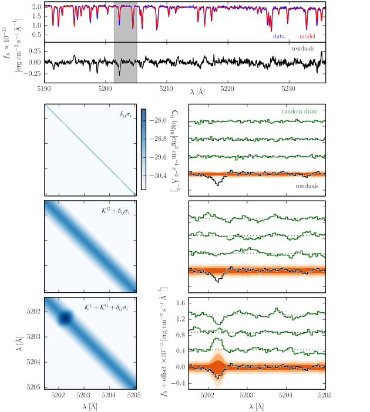

Starfish is written in Python. The code is open source and actively developed on Github
Getting started examples as well as general documentation
An introductory presentation about spectroscopic inference and why one might like to use Starfish
Our paper recently appeared on astro-ph!
If you use this code in your own research, please cite Czekala et al. 15.
Consider the following scenario: An astronomer returns from a successful observing trip with many high signal-to-noise, high resolution stellar spectra on her trusty USB thumbdrive. If she was observing at the type of echelle spectrograph common to most modern observatories, chances are that her data span a significant spectral range, perhaps the full optical (3700 to 9000 angstroms) or the full near-infrared (0.7 to 5 microns). Now that she's back at her home institution, she sets herself to the task of determining the stellar properties of her targets.
She is an expert in the many existing well-tested techniques for determining stellar properties, such as MOOG, SME, and SPC. But the fact that these use only a small portion of her data—several well-chosen lines like Fe and Na—has stubbornly persisted in the back of her mind.
At the same time, the astronomer has been paying attention to the steady increasing availability of high quality synthetic spectra, produced by a variety of groups around the world. These libraries span a large range of the stellar parameters she cares about (effective temperature, surface gravity, and metallicity) with a tremendous spectral range from the UV to the near-infrared—fully covering her dataset. She wonders, "instead of choosing a subset of lines to study, what if I use these synthetic libraries to fit all of my data?"
She knows that it's not quite so simple as just fitting more spectral range, however. She knows that even though the synthetic spectral libraries are generally high quality and quite remarkable in their scope, it is still very hard to produce perfect synthetic spectra. This is primarily due to innacuracies in atomic and molecular constants that are difficult to measure in the lab, making it difficult to ensure that all spectral lines are accurate over a wide range of both stellar parameters and spectral range. The highest quality libraries tend to achieve their precision by focusing on a "sweet spot" of stellar parameters, generally near those of the Sun, and by choosing a limited spectral range, where atomic constants can be meticulously vetted for accuracy. The astronomer also knows that some of her stars may have non-solar ratios of elemental abundances, a behavior that is not captured by the limited set of adjustable parameters that specify a spectrum in a synthetic library. She's tried fitting the full spectrum of her stars using a simple \( \chi^2 \) likelihood function, but she knows that ignoring these effects will lead to parameter estimates that are biased and have unrealistically small uncertainties. She wonders, "How can I fit my entire spectrum but avoid these pitfalls?"
We've developed a framework for spectroscopic inference that fulfills the astronomer's dream of using all of the data, called Starfish. Our statistical framework attempts to overcome many of the difficulties that the astronomer noted. Principally, at high resolution and high sensitivty, model systematics—such as innaccuracies in the strengths of particular lines—will dominate the noise budget. Ignoring these systematics and proceeding with a simple figure of merit function, like \( \chi^2 \), can lead to biased answers with drastically underestimated uncertainties on parameter estimates.
We address these problems by accounting for the covariant structure of the residuals that can result from fitting models to data in this regime. Using some of the machinery developed by the field of Gaussian processes, we can parameterize the covariant structure both due to general line mis-matches as well as specific "outlier" spectral lines due to pathological errors in the atomic and molecular line databases.
Besides alleiviating the problem of systematic bias and spectral line outliers when inferring stellar parameters, this approach has many added benefits. By forward-modelling the data, we put the problem of spectroscopic inference on true probabilistic footing. Rather than iterating in an open loop between stellar spectroscopists and stellar modellers, whereby knowledege about the accuracies of line fits is communicated post-mortem, a probabilistic inference framework like Starfish delivers posterior distributions over the locations and strengths of outlier spectral lines. Combined with a suite of stellar spectra spanning a range of stellar parameters and a tunable list of atomic and molecular constants, a probabilistic framework like this provides a way to close the loop on improving both the stellar models and the stellar parameters inferred from them by comparing models to data directly, rather than mediating through a series of fits to individual lines.
Lastly, using a forward model means that uncertainties about other non-stellar parameters, such as flux-calibration or interstellar redenning, can be built into the model and propogated forward. In a future version of Starfish we aim to include a parameterization for the accretion veiling continuum of young T Tauri stars.
Here is a general example of what can happen when one attempts to fit data with synthetic spectra over a wide spectral range. This is an optical spectrum of WASP-14, an F star hosting a transiting exoplanet.
top: A comparison of the data and a typical model fit, along with the corresponding residual spectrum. Notice that this residual spectrum does not look like pure white noise.

middle: A zoomed view of the gray band in the top panel, highlighting the mildly covariant residual structure that is produced by slight mismatches between the data and model spectra.

bottom: The autocorrelation of the residual spectrum. Notice the substantial autocorrelation signal for offsets of 8 pixels or fewer, demonstrating clearly that the residuals are not well described by white (Poisson) noise alone.

Here is a specific example of individual lines that are strongly discrepant from the data. There is substantial localized strucuture in the residuals due to "outlier" spectral lines in the model library. For any specific line, there might exist a set of model parameters that will improve the match with the data, but there is no single set of model parameters that will properly fit all of the lines at once.

In order to account for the covariant residual structure which results from model systematics, we derive a likelihood function with a non-trivial covariance matrix, which maps the covariances between pixels.
$$ p (\mathsf{D} | \mathsf{M} ) = \frac{1}{\left [ (2 \pi)^N \det(\mathsf{C}) \right ]^{1/2}} \exp \left (- \frac{1}{2} \mathsf{R}^T \mathsf{C}^{-1} \mathsf{R} \right ) $$
We then parameterize this covariance matrix \( \mathsf{C} \) using Gaussian process covariance kernels. This procedure is demonstrated in the following figure through the following decomposition of how the Gaussian process kernels contribute to the covariance matrix.
top panel: a typical comparison between the data and model spectra, along with the associated residual spectrum. The subsequent rows focus on the illustrative region shaded in grey.
The left column of panels shows the corresponding region of the covariance matrix \( \mathsf{C} \), decomposed into its primary contributions: (top row) the trivial noise matrix using just Poisson errors \(\delta_{ij} \sigma_i \), (middle row) the trivial matrix combined with a "global" covariance kernel \( \mathcal{K}^\textrm{G}\), and (bottom row) these matrices combined with a "local" covariance kernel \( \mathcal{K}^\textrm{L}\) to account for an outlier spectral line.
The right column of panels shows the zoomed-in residual spectrum with example random draws from the covariance matrix to the left. The shaded contours in orange represent the 1, 2, and 3 sigma dispersions of an ensemble of 200 random draws from the covariance matrix. Note that the trivial covariance matrix (top row) poorly reproduces both the scale and structure of the residual spectrum. The addition of a global kernel (middle row) more closely approximates the structure and amplitude of the residuals, but misses the outlier line at 5202.5 angstroms. Including a local kernel at that location (bottom row) results in a covariance matrix that does an excellent job of reproducing all the key residual features.
Starfish uses Markov Chain Monte Carlo (MCMC) to explore the full posterior probability distribution of the stellar parameters, including the noise parameters which describe the covariance of the residuals. By fitting all of the parameters simultaneously, we can be more confident that we have properly accounted for our uncertainty in these other parameters.
top A K-band SPEX spectrum of Gl 51 (an M5 dwarf) fit with a PHOENIX spectroscopic model. While the general agreement of the spectrum is excellent, the strength of the Na and Ca lines is underpredicted (also noted by Rojas-Ayala et. al 2012).
bottom The residual spectrum from this fit along with orange shading contours representing the distributions of a large number of random draws from the covariance matrix (showing 1, 2, and 3 sigma).

Notice how the outlier spectral line features are consistently identified and downweighted by the local covariance kernels. Because the parameters for the local kernels describing the spectral outliers are determined self-consistently along with the stellar parameters, we can be more confident that the influence of these outlier lines on the spectral fit is appropriately downweighted. This weighting approach is in contrast to a more traditional "sigma-clipping" procedure, which would discard these points from the fit. As noted by Mann et al. 2013, some mildly discrepant spectral regions actually contain significant spectral information about the stellar parameters, perhaps more information than spectral regions that are in excellent agreement with the data. Rather than simply discarding these discrepant regions, the appropriate step is then to determine the weighting by which these spectral regions should contribute to the total likelihood. These local kernels provide exactly such a weighting mechanism.
right The posterior probability distribution of the interesting stellar parameters for Gl 51, marginalized over all of nuisance parameters including the covariance kernel hyperparameters. The contours are drawn at 1, 2, and 3 sigma levels for reference.
The forward modeling approach is unique in that the result is a posterior distribution over stellar parameters. Rather than yielding a simple metric of "best-fit" parameters, exploring the probability distribution with MCMC reveals any covariances between stellar parameters. For this star with the above K-band spectrum, the covariance between \( T_\textrm{eff} \) and \( [\textrm{Fe}/ \textrm{H}] \) is mild, but for stars of different spectral types the degeneracy can be severe.

For spectra with very high signal to noise, interpolation error from the synthetic library may constitute a significant portion of the noise budget. This error is due to the fact that stellar spectral synthesis is an inherently non-linear process requiring complex model atomospheres and radiative transfer. Unfortunately, we are not (yet) in an age where synthetic spectral synthesis over a large spectral range is fast enough to use within a MCMC call. Therefore, it is necessary to approximate an interpolated spectrum based upon spectra with similar stellar properties.
Following the techniques of Habib et al. 2007, we design a spectral emulator, which, rather than interpolating spectra, delivers a probability distribution over all probable interpolate spectra. Using this probability distribution, we can in our likelihood function analytically marginalize over all probable spectral interpolations, in effect forward propagating any uncertainty introduced by the interpolation process.
 top The mean spectrum, standard deviation spectrum, and five eigenspectra that form the basis of the PHOENIX synthetic library used to model Gl 51, generated using a subset of the parameter space most relevant for M dwarfs.
top The mean spectrum, standard deviation spectrum, and five eigenspectra that form the basis of the PHOENIX synthetic library used to model Gl 51, generated using a subset of the parameter space most relevant for M dwarfs.
bottom The original synthetic spectrum from the PHOENIX library (\(T_\textrm{eff} = 3000\,\textrm{K} \), \(\log g = 5.0\,\textrm{dex} \), \( [\textrm{Fe}/ \textrm{H}] = 0.0\,\textrm{dex}\)) compared with a spectrum reconstructed from a linear combination of the derived eigenspectra, using the weights listed in the top panel.